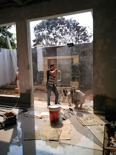
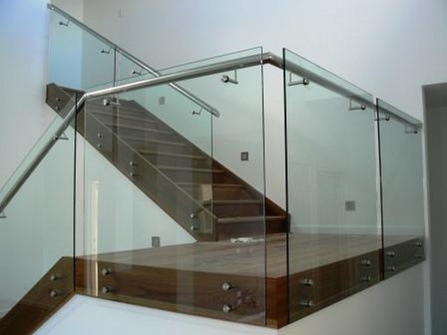

Kaca yakni salah satu material rumah yang pasti selalu ada, utamanya sebagai jendela. Kita kerap menemui material-material hal yang demikian pada gedung, kantor, industry pun rumah hunian. Banyak jenis dari kaca yang dapat di gunakan untuk banguan ataupun rumah tinggal.
Tak kaca tempered, kaca shower, kanopi kaca, parket kayu jati dan masih banyak lagi. Semua material tersebut bisa di aplikasikan harga sebuah hunian menonjol lebih cantik nyaman dan juga aman. Berikut ini sedikit ulasan mengenai kaca bagi sebuah banguanan, fungsi utama dan bagaiman memilih kaca yang layak untuk sebuah hunian bagus rumah, kantor maupun gedung. Akan di jelaskan juga mengenai lantai kayu jati terbaik yang dapat anda beli.
Jual Kaca Cermin di Bandung
Kaca cermin kini mempunyai desain yang berbeda. Kaca cermin dilapisi dengan pelapis transparan tipis dan oksida logam sebagai lapisan pelapis. Sekarang, cermin tak cuma berbentuk persegi saja. Sekarang, cermin tidak cuma berbentuk persegi atau persegi panjang saja. Jadi, cuma tampak transparan dari satu sisi saja. Jadi, Anda bisa sesuaikan desainnya dengan desain ruangan yang akan Anda pilih untuk menempatkan cermin hal yang demikian. Sekarang perlu dipandang juga yakni apakah Anda berkeinginan memiliki kaca cermin Bandung desain minimalis atau yang elegan. Cermin minimalis mempunyai siku. Kalau itu, adakalanya cerminnya tak ada bingkainya atau yang kerap kali disebut dengan kaca cermin Bandung frameless.
Banyak orang yang lebih menyukai dengan desain kaca cermin Bandung minimalis. Sementara itu, Anda yang berada di dalam ruangan dapat mengamati orang lain yang ada di luar. Jadi, orang di luar tak bisa melihat Anda berada di dalam. Tapi, Anda bisa mengamati orang lain dari dalam rumah. Namun kunjungi dis.or.id untuk menerima penawaran menarik. Disana anda bisa menerima kaca cermin Bandung yang layak dengan kemauan anda.
Info Pemesanan Selengkapnya
Google Maps: https://www.google.com/maps/d/u/0/viewer?mid=1HNPQwTg5M-VmcXHvNbVncTuxY7ALbdIQ&ll=-7.27380280025364%2C112.65243155000007&z=18
Note: https://www.facebook.com/notes/distributor-of-industrial-supply/pabrik-supplier-kaca-cermin/1785720801727799/
Event: https://www.facebook.com/events/135275393812568/
Distributor & Supplier Pintu Kaca

Pengerjaan ini banyak contoh pintu seperti cocok dengan ada di bayang-bayang Anda. Anda bisa pilih desain seperti apa yang Anda sukai. Kelengkapan model pintu kaca bisa anda peroleh, tak cuma contoh pintu kaca konvensional, adalah pintu kaca lipat, melainkan juga pintu kaca geser. Daya macam kaca yang dapat Anda pilih untuk pintu kaca Anda seperti kaca tempered yang sedang booming atau kaca non-tempered yang harganya lebih terjangkau. Desain tersebut bisa disesuaikan dengan konsep properti Anda. Kini tak kalah penting lagi ialah pemilihan kaca.
Dis.or id siap membantu anda untuk membuatkan pintu kaca idaman anda.
Kaca yang di gunakan yaitu kaca dengan kualitas terbaik. Dis.or.id memiliki kekuatan yang telah betul-betul profesional di bidang ini.
Jasa Pemasangan Railing Kaca

Railing kaca yakni opsi yang ideal dikala Anda menghendakin desain interior rumah yang minimalis. Tidak konsep rumah modern dikala ini, kebanyakan rumah dibangun dengan desain minimalis. Malah juga bagian pegangan atau piguranya. Pastikan komponen hal yang demikian terbuat dari bahan aluminum yang kuat. Dan kaca ini bisa Anda gunakan sebagai bahan untuk membuat kaca railing. Kaca tipe yang satu ini sudah familiar dengan ketahanannya. Malah juga bahan yang diaplikasikan.
Dalam hal ini, Anda dapat memutuskan sendiri berapa ketebalan dari kaca yang dipakai tersebut. Tentukan juga desain railing kaca. Ini variasi kaca yang benar-benar kuat. Kaca ini amat kuat dan juga aman. Dikatakan sungguh-sungguh aman lantaran kaca tempered tidak memunculkan pecahan yang runcing ketika tiba-tiba kaca pecah entah itu akibat kecelakaan atau bencana seperti gempa. Jikalau juga dengan railing. Kecuali disana terdapat banyak tersedia bermacam-macam ukuran railing kaca dengan desain yang anda inginkan.
Harga yang sungguh-sungguh ekonomis serta mutu terbaik yang telah terjamin membuat anda tidak akan menyesal membeli railing kaca di dis.or.id.
Distributor, Supplier & Jasa Pasang Kanopi Kaca
Salah satu ragam kanopi kaca yang bisa anda aplikasikan pada atap merupakan atap kaca skylight yang adalah kanopi kaca dalam format jendela horizontal atau kubah yang umumnya ditempatkan di atap bangunan yang mempunyai maksud untuk pencahayaan ruangan. Canopy kaca dengan atap kaca memang sebuah bangunan yang asangat elgan untuk jaman modern seperti kini ini dengan harga yang amat lumayan sekiranya di bandingkan kanopi atap biasa. Tidak cuma sekadar tembus pandang. Ada sebagian alasan kenapa Pintu Kaca Shower banyak digunakan salah satunya ialah kaca lebih tampak bersih dan rapi dan juga lebih gampang dalam perawatannya. Di samping pintu kaca shower akan membuat kamar mandi kecil nampak lebih besar. Pada atap akrilik, absorpsi cahaya yang terjadi demikian kecil sehingga walaupun ketebalannya bertambah, sifat transparannya tidak banyak berubah.
Dis.or.id bisa membantu anda yang berkeinginan memasang atap kaca skylight pada gedung, dengan berjenis-jenis kelebihan yang bisa anda temukan dengan memanfaatkan jasa yang di tawarkan dis.or.id. Terdapat banyak kanopi dengan beragam ukuran dan ketebalan yang dapat anda pilih layak dengan yang anda butuhkan. Jikalau fungsi utama kanopi sebagai pelindung untuk bangunan tersebut, pemasangan kanopi kaca juga dapat membuat bangunan menjadi terlihat lebih menawan dan menarik, apalagi memakai konsep yang sama dengan konsep rumah minimalis. Tidak anda sedang mencari kanopi kaca, anda dapat langsung mengunjungi dis.or.id. Disana anda akan memperoleh kanopi kaca yang layak dengan berjenis-jenis ketebalan dan harga yang cukup terjangkau.
Distributor & Supplier Kaca Shower
Pintu Kaca Shower pada kamar mandi yakni salah satu alternatif yang baik untuk desain interior kamar mandi modern. Seandainya akan memberikan kesan lapang saat berada di kamar mandi, mandi dengan shower akan memberikan kesejukan tersendiri dibanding kamar mandi dengan bak mandi. Kaca shower ini bisa menjadi dan mempunyai skor keindahan tersendiri karena dengan memasangnya tentu kamar mandi anda akan menonjol lebih indah dan mewah layknya kamar mani hotel. Bila pemasangannya juga betul-betul mudah dilaksanakan dan tidak membutuhkan waktu yang lama. Di samping pintu kaca shower akan membikin kamar mandi kecil menonjol lebih besar.
Dis.or.id menyediakan kaca shower dengan mutu premium sehingga ketika dipasang akan langsung kelihatan mewah. Disana anda dapat mendapatkan kaca shower yang pastinya layak untuk kamar mandi anda. Harga yang ditawarkan bahkan tergolong sungguh-sungguh murah. Anda dapat buktikan sendiri.
Distributor, Supplier & Jasa Pasang Kanopi Kaca
Seiring dengan perkembangan zaman di dunia properti, sekarang kanopi kaca sudah berkembang pesat mengikuti arsitektur modern. Diantaraya yaitu kaca tempered 8 mm, kaca tempered 10 mm clear, kaca tempered 12 mm clear, kaca laminated 12 mm clear, kaca laminated 5 mm + 5 mm clear non tempered kaca, kaca laminated 5 mm + 5 mm tempered clear dan masih banyak lagi. Atap kaca skylight ditujukkan untuk menerima cahaya alami UV yang memiliki fungsi sebagai penerangan dalam sebuah ruang. Jadi sudah tak heran lagi segala orang ingin mencari harga yang sungguh-sungguh kompetitif untuk menyesuaikan budget atau anggaran mereka masing – masing untuk membikin produk canopy kaca. Apabila tembus pandang, kaca mengabsorpsi sinar yang masuk sehingga semakin tebal kaca karenanya semakin sedikit sinar yang bisa melaluinya, maka sifat transparannya makin berkurang.|Di samping pintu kaca shower akan membuat kamar mandi kecil terlihat lebih besar. Atap akrilik atau bisa juga disebut atap kaca acrylic ini banyak ditemukan di sebuah bangunan rumah, seperti ruko, apartemen, restoran, mall, sampai bangunan gedung.
Tidak anda saat ini sedang membutuhkan kanopi kaca, anda bisa langsung mengunjungi dis.or.id. Banyak bangunan seperti gedung perkantoran, perumahan, ruko dan apartement yang menggunakan kanopi kaca tempered. Setelah kaca untuk atap kanopi cukup digemari. Tak anda sedang mencari kanopi kaca, anda bisa seketika mengunjungi dis.or.id.
Jasa Maintenance Kaca

Kaca betul-betul membutuhkan perawatan karena setiap hari terkena cahaya matahari atau juga hujan. Tidak kaca tidak kusam, maka kaca semestinya dibersihkan secara regular. Selain cuma membersihkan kaca, jasa maintenance kaca juga bisa mengerjakan perbaikan. Membersihkan bagian kaca gedung Anda yang mungkin rusak, pecah, atau mengalami situasi sulit lainnya.
Tidak anda mebutuhkan jasa maintenance kaca, anda dapat mengunjungi dis.or.id. Untuk itu, alat-alat sepatutnya komplit sehingga kami cakap membersihkan segala sudut gedung. Dis.or.id memiliki semua kekuatan spesialis yang di rekrut hanya mereka yang profesional yang tahu persis bagaimana cara menerapkan alat dan bagaimana membersihkan kaca gedung bertingkat. Oleh sebab itu, dis.or.id hanya memilih orang-orang yang benar-benar profesional dan telah mempunyai pengalaman dalam hal maintenance kaca. Selain hanya dalam hal membersihkan kaca, mereka juga mampu mengerjakan pembetulan serta penggantian kaca yang mengalami kerusakan.
Jasa Pemasangan Kaca Tempered

Kian banyak orang yang mau mengaplikasikan kaca ini. Dengan pengerjaan pendinginan yang kencang membuat kaca memiliki kelenturan dan tenaga yang baik kepada tekanan di kedua sisi permukaan kaca. Banyak bagian properti yang bisa diciptakan dengan bahan berupa kaca tempered. Namun dulu hanya gedung perkantoran atau sentra perbelanjaan modern saja yang menggunakan variasi kaca ini, sekarang rumah hunian juga sudah dibangun dengan kaca tempered. Selain ini tidak lain karena semakin banyak orang yang memahami kwalitas serta keunggulan dari kaca tempered ini.
Salah satu variasi kaca yang sesuai untuk dipakai pada seluruh ragam bangunan maupun perindustrian merupakan kaca tempered, yakni yang paling aman sebab memiliki elastisitas lebih baik dibandingkan dengan kaca umumnya. Kini dari kaca tempered dapat mengurangi bahaya cedera ketika kaca pecah karena dikala terjadi sesuatu seperti kaca pecah maka kaca tempered akan terurai menjadi butiran kecil yang relatif lebih aman dari potongan pecahan kaca lazim. Disana anda dapat memanfaatkan jasa pemasangan kaca tempered untuk segala ragam bidang ataupun bangunan. Tak ketika ini anda sedang mau membangun suatu bangunan atau gedung, anda dapat memanfaatkan kaca tempered untuk dipakai lantas ke seluruh ragam bidang. Lebih dari itu, dis.or.id telah menyiapkan energi spesialis yang siap untuk menjalankan pemasangan, entah itu kaca tempered untuk kanopi, pintu, partisi, balkon, dan lain sebagainya.
Distributor & Supplier Pintu Lipat Kaca
Bukan hanya bagian depan saja yang dipasang pintu kaca lipat namun bagian dalam juga dapat. Pada kenyataannya, harga kaca tempered ini tak terlalu mahal. Mak dari itu, kaca ini ditawarkan dengan harga yang cukup dan relatif murah. Memang dibandingi dengan ragam kaca lainnya, harganya lebih mahal. Akan melainkan, terpautnya tak terlalu signifikan.
Ukuran kaca menjadi unsur penentu berapa harga pintu kaca lipat yang Anda inginkan. Banyak pertimbangan yang membikin Anda pasti yakin untuk memilih kaca tempered ketimbang variasi kaca yang lainnya. Dan yang pasti, ruangan menjadi lebih modern, minimalis, dan nyaman untuk ditempati.
Jasa Pemasangan Kubikel Toilet
Kubikel kamar mandi memiliki desain yang mewah dan elegan sehingga siapa saja yang memandangnya pasti akan tertarik, tidak hanya itu kubikel kaca memberikan kesan bersih, rapid an tertata. Banyak profit yang dapat di daptkan dengan mengaplikasikan kubikel kamar kecil diantaranya yakni tampilan yang lebih elegan dan lebih bersih.
Rumah sakit dan perkantoran. Banyak keuntungan yang dapat di temukan dengan menggunakan kubikel kamar kecil diantaranya adala efisiensi, dimana dalam satu ruangan bisa menampung dan membikin banyak kamar mandi. Kaca juga dapat menjadi solusi keindahan kamar mandi, tetapi juga bisa jadi dilema seandainya Anda menggunakan material dan tempat yang salah. Kalau anda beratensi untuk mempunyai kubikel WC, anda dapat langsung mengunjungi dis.or.id.
Profit dari sekat kaca memberikan yakni bisa memberikan efek luas sebab ruangan tersekat tapi secara visual tidak.
Sebab disana terdapat pelbagai ukuran kubikel toilet yang bisa anda jadikan opsi untuk hunian atau temap usaha anda. Justru embun dapat merekat di kaca dan lambat laun bisa membikin kaca tak sejernih semula.
Distributor & Supplier Partisi Kaca
Partisi kaca sudah lagi dianggap sebagai hal yang aneh lagi. Sudah banyak properti yang memakai bahan berupa kaca sebagai partisi. Anda bisa lihat di sentra perbelanjaan modern, hotel, dan juga perkantoran. tertentu seperti kamar mandi dalam atau taman dalam ruang yang terdapat di komponen tengah atau belakang rumah lazimnya pembatas berupa partisi kaca. Dalam hal ini, Anda tahu macam kaca apa yang baik untuk partisi. Selain itu, tentukan juga desainnya apakah partisi kaca tersebut frameless (tanpa bingkai) atau dengan . Selain itu, pertimbangkan juga privacy. Ini yang akan membikin Anda menentukan hal yang pas apakah Anda menggunakan kaca transparan, semi transparan, atau kaca cermin Bandung. Tak sekali partisi ini lebih hemat daripada pembatas berupa tembok yang terbuat dari batu bata, pasir, dan juga semen. Atas pertimbangan efisiensi, maka banyak orang yang beralih ke partisi kaca. Mutu, banyak rumah hunian yang menerapkan partisi kaca. Anda bisa partisi kaca ini sebagai penyekat ruangan seperti kamar mandi dalam, taman dalam ruangan, ruangan bermain di dalam rumah, dan lain sebagainya. Kecuali itu, tentukan juga variasi kaca yang berharap dipakai apakah transparan, semi transparan, atau kaca cermin Bandung yang membuat ruangan sungguh-sungguh privat.